UNIT 4
CHEMICAL BONDING AND MOLECULAR STRUCTURE
Objectives
After studying this Unit, you will be able to
- understand KÖssel-Lewis approach to chemical bonding;
- explain the octet rule and its limitations, draw Lewis structures of simple molecules;
- explain the formation of different types of bonds;
- describe the VSEPR theory and predict the geometry of simple molecules;
- explain the valence bond approach for the formation of covalent bonds;
- predict the directional properties of covalent bonds;
- explain the different types of hybridisation involving s, p and d orbitals and draw shapes of simple covalent molecules;
- describe the molecular orbital theory of homonuclear diatomic molecules;
- explain the concept of hydrogen bond.
Matter is made up of one or different type of elements. Under normal conditions no other element exists as an independent atom in nature, except noble gases. However, a group of atoms is found to exist together as one species having characteristic properties. Such a group of atoms is called a molecule. Obviously there must be some force which holds these constituent atoms together in the molecules. The attractive force which holds various constituents (atoms, ions, etc.) together in different chemical species is called a chemical bond. Since the formation of chemical compounds takes place as a result of combination of atoms of various elements in different ways, it raises many questions. Why do atoms combine? Why are only certain combinations possible? Why do some atoms combine while certain others do not? Why do molecules possess definite shapes? To answer such questions different theories and concepts have been put forward from time to time. These are Kössel-Lewis approach, Valence Shell Electron Pair Repulsion (VSEPR) Theory, Valence Bond (VB) Theory and Molecular Orbital (MO) Theory. The evolution of various theories of valence and the interpretation of the nature of chemical bonds have closely been related to the developments in the understanding of the structure of atom, the electronic configuration of elements and the periodic table. Every system tends to be more stable and bonding is nature’s way of lowering the energy of the system to attain stability.
4.1 KÖssel-Lewis Approach to Chemical Bonding
In order to explain the formation of chemical bond in terms of electrons, a number of attempts were made, but it was only in 1916 when Kössel and Lewis succeeded independently in giving a satisfactory explanation. They were the first to provide some logical explanation of valence which was based on the inertness of noble gases.
Lewis pictured the atom in terms of a positively charged ‘Kernel’ (the nucleus plus the inner electrons) and the outer shell that could accommodate a maximum of eight electrons. He, further assumed that these eight electrons occupy the corners of a cube which surround the ‘Kernel’. Thus the single outer shell electron of sodium would occupy one corner of the cube, while in the case of a noble gas all the eight corners would be occupied. This octet of electrons, represents a particularly stable electronic arrangement. Lewis postulated that atoms achieve the stable octet when they are linked by chemical bonds. In the case of sodium and chlorine, this can happen by the transfer of an electron from sodium to chlorine thereby giving the Na+ and Cl– ions. In the case of other molecules like Cl2, H2, F2, etc., the bond is formed by the sharing of a pair of electrons between the atoms. In the process each atom attains a stable outer octet of electrons.
Lewis Symbols: In the formation of a molecule, only the outer shell electrons take part in chemical combination and they are known as valence electrons. The inner shell electrons are well protected and are generally not involved in the combination process.
G.N. Lewis, an American chemist introduced simple notations to represent valence electrons in an atom. These notations are called Lewis symbols. For example, the Lewis symbols for the elements of second period are as under:

Significance of Lewis Symbols : The number of dots around the symbol represents the number of valence electrons. This number of valence electrons helps to calculate the common or group valence of the element. The group valence of the elements is generally either equal to the number of dots in Lewis symbols or 8 minus the number of dots or valence electrons.
Kössel, in relation to chemical bonding, drew attention to the following facts:
- In the periodic table, the highly electronegative halogens and the highly electropositive alkali metals are separated by the noble gases;
- The formation of a negative ion from a halogen atom and a positive ion from an alkali metal atom is associated with the gain and loss of an electron by the respective atoms;
- The negative and positive ions thus formed attain stable noble gas electronic configurations. The noble gases (with the exception of helium which has a duplet of electrons) have a particularly stable outer shell configuration of eight (octet) electrons, ns2np6.
- The negative and positive ions are stabilized by electrostatic attraction.
For example, the formation of NaCl from sodium and chlorine, according to the above scheme, can be explained as:
| Na | → | Na+ + e– |
| [Ne] 3s1 | [Ne] | |
| Cl + e– | → | Cl– |
| [Ne] 3s2 3p5 | [Ne] 3s2 3p6 or [Ar] | |
| Na+ + Cl– | → | NaCl or Na+Cl– |
Similarly the formation of CaF2 may be shown as:
| Ca | → | Ca2+ + 2e– |
| [Ar]4s2 | [Ar] | |
| F + e– | → | F– |
| [He] 2s2 2p5 | [He] 2s2 2p6 or [Ne] | |
| Ca2+ + 2F– | → | CaF2 or Ca2+(F– )2 |
The bond formed, as a result of the electrostatic attraction between the positive and negative ions was termed as the electrovalent bond. The electrovalence is thus equal to the number of unit charge(s) on the ion. Thus, calcium is assigned a positive electrovalence of two, while chlorine a negative electrovalence of one.
Kössel’s postulations provide the basis for the modern concepts regarding ion-formation by electron transfer and the formation of ionic crystalline compounds. His views have proved to be of great value in the understanding and systematisation of the ionic compounds. At the same time he did recognise the fact that a large number of compounds did not fit into these concepts.
4.1.1 Octet Rule
Kössel and Lewis in 1916 developed an important theory of chemical combination between atoms known as electronic theory of chemical bonding. According to this, atoms can combine either by transfer of valence electrons from one atom to another (gaining or losing) or by sharing of valence electrons in order to have an octet in their valence shells. This is known as octet rule.
4.1.2 Covalent Bond
Langmuir (1919) refined the Lewis postulations by abandoning the idea of the stationary cubical arrangement of the octet, and by introducing the term covalent bond.
or Cl – Cl
Covalent bond between two Cl atoms
The Lewis-Langmuir theory can be understood by considering the formation of the chlorine molecule,Cl2. The Cl atom with electronic configuration, [Ne]3s2 3p5, is one electron short of the argon configuration. The formation of the Cl2 molecule can be understood in terms of the sharing of a pair of electrons between the two chlorine atoms, each chlorine atom contributing one electron to the shared pair. In the process both chlorine atoms attain the outer shell octet of the nearest noble gas (i.e., argon).
The dots represent electrons. Such structures are referred to as Lewis dot structures.
The Lewis dot structures can be written for other molecules also, in which the combining atoms may be identical or different. The important conditions being that:
- Each bond is formed as a result of sharing of an electron pair between the atoms.
- Each combining atom contributes at least one electron to the shared pair.
- The combining atoms attain the outer-shell noble gas configurations as a result of the sharing of electrons.
- Thus in water and carbon tetrachloride molecules, formation of covalent bonds can be represented as:

Thus, when two atoms share one electron pair they are said to be joined by a single covalent bond. In many compounds we have multiple bonds between atoms. The formation of multiple bonds envisages sharing of more than one electron pair between two atoms. If two atoms share two pairs of electrons, the covalent bond between them is called a double bond. For example, in the carbon dioxide molecule, we have two double bonds between the carbon and oxygen atoms. Similarly in ethene molecule the two carbon atoms are joined by a double bond.
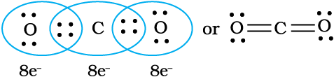
Double bonds in CO2 molecule

C2H4 molecule
When combining atoms share three electron pairs as in the case of two nitrogen atoms in the N2 molecule and the two carbon atoms in the ethyne molecule, a triple bond is formed.

N2 molecule
C2H2 molecule
4.1.3 Lewis Representation of Simple Molecules (the Lewis Structures)
The Lewis dot structures provide a picture of bonding in molecules and ions in terms of the shared pairs of electrons and the octet rule. While such a picture may not explain the bonding and behaviour of a molecule completely, it does help in understanding the formation and properties of a molecule to a large extent. Writing of Lewis dot structures of molecules is, therefore, very useful. The Lewis dot structures can be written by adopting the following steps:
- The total number of electrons required for writing the structures are obtained by adding the valence electrons of the combining atoms. For example, in the CH4 molecule there are eight valence electrons available for bonding (4 from carbon and 4 from the four hydrogen atoms).
- For anions, each negative charge would mean addition of one electron. For cations, each positive charge would result in subtraction of one electron from the total number of valence electrons. For example, for the CO32– ion, the two negative charges indicate that there are two additional electrons than those provided by the neutral atoms. For NH4+ ion, one positive charge indicates the loss of one electron from the group of neutral atoms.
- Knowing the chemical symbols of the combining atoms and having knowledge of the skeletal structure of the compound (known or guessed intelligently), it is easy to distribute the total number of electrons as bonding shared pairs between the atoms in proportion to the total bonds.
- In general the least electronegative atom occupies the central position in the molecule/ion. For example in the NF3 and CO32–, nitrogen and carbon are the central atoms whereas fluorine and oxygen occupy the terminal positions.
- After accounting for the shared pairs of electrons for single bonds, the remaining electron pairs are either utilized for multiple bonding or remain as the lone pairs. The basic requirement being that each bonded atom gets an octet of electrons.
Lewis representations of a few molecules/ ions are given in Table 4.1.
Table 4.1 The Lewis Representation of Some Molecules

* Each H atom attains the configuration of helium (a duplet of electrons)
Problem 4.1
Write the Lewis dot structure of CO molecule.
Solution
Step 1. Count the total number of valence electrons of carbon and oxygen atoms. The outer (valence) shell configurations of carbon and oxygen atoms are: 2s2 2p2 and 2s2 2p4, respectively. The valence electrons available are 4 + 6 =10.
Step 2. The skeletal structure of CO is written as: C O
Step 3. Draw a single bond (one shared electron pair) between C and O and complete the octet on O, the remaining two electrons are the lone pair on C.

This does not complete the octet on carbon and hence we have to resort to multiple bonding (in this case a triple bond) between C and O atoms. This satisfies the octet rule condition for both atoms.

Problem 4.2
Write the Lewis structure of the nitrite ion, NO2– .
Solution
Step 1. Count the total number of valence electrons of the nitrogen atom, the oxygen atoms and the additional one negative charge (equal to one electron).
N(2s2 2p3), O (2s2 2p4)
5 + (2 × 6) +1 = 18 electrons
Step 2. The skeletal structure of NO2– is written as : O N O
Step 3. Draw a single bond (one shared electron pair) between the nitrogen and each of the oxygen atoms completing the octets on oxygen atoms. This, however, does not complete the octet on nitrogen if the remaining two electrons constitute lone pair on it.

Hence we have to resort to multiple bonding between nitrogen and one of the oxygen atoms (in this case a double bond). This leads to the following Lewis dot structures.

4.1.4 Formal Charge
Lewis dot structures, in general, do not represent the actual shapes of the molecules. In case of polyatomic ions, the net charge is possessed by the ion as a whole and not by a particular atom. It is, however, feasible to assign a formal charge on each atom. The formal charge of an atom in a polyatomic molecule or ion may be defined as the difference between the number of valence electrons of that atom in an isolated or free state and the number of electrons assigned to that atom in the Lewis structure. It is expressed as :
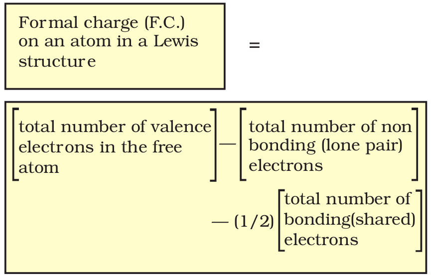
The counting is based on the assumption that the atom in the molecule owns one electron of each shared pair and both the electrons of a lone pair.
Let us consider the ozone molecule (O3). The Lewis structure of O3 may be drawn as :

The atoms have been numbered as 1, 2 and 3. The formal charge on:
- The central O atom marked 1 = 6 – 2 – 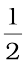 (6) = +1
- The end O atom marked 2 = 6 – 4 –
 (4) = 0
(4) = 0 - The end O atom marked 3 = 6 – 6 –
 (2) = –1
(2) = –1
Hence, we represent O3 along with the formal charges as follows:

We must understand that formal charges do not indicate real charge separation within the molecule. Indicating the charges on the atoms in the Lewis structure only helps in keeping track of the valence electrons in the molecule. Formal charges help in the selection of the lowest energy structure from a number of possible Lewis structures for a given species. Generally the lowest energy structure is the one with the smallest formal charges on the atoms. The formal charge is a factor based on a pure covalent view of bonding in which electron pairs are shared equally by neighbouring atoms.
4.1.5 Limitations of the Octet Rule
The octet rule, though useful, is not universal. It is quite useful for understanding the structures of most of the organic compounds and it applies mainly to the second period elements of the periodic table. There are three types of exceptions to the octet rule.
The incomplete octet of the central atom
In some compounds, the number of electrons surrounding the central atom is less than eight. This is especially the case with elements having less than four valence electrons. Examples are LiCl, BeH2 and BCl3.

Li, Be and B have 1,2 and 3 valence electrons only. Some other such compounds are AlCl3 and BF3.
Odd-electron molecules
In molecules with an odd number of electrons like nitric oxide, NO and nitrogen dioxide, NO2, the octet rule is not satisfied for all the atoms

The expanded octet
Elements in and beyond the third period of the periodic table have, apart from 3s and 3p orbitals, 3d orbitals also available for bonding. In a number of compounds of these elements there are more than eight valence electrons around the central atom. This is termed as the expanded octet. Obviously the octet rule does not apply in such cases.
Some of the examples of such compounds are: PF5, SF6, H2SO4 and a number of coordination compounds.

Interestingly, sulphur also forms many compounds in which the octet rule is obeyed. In sulphur dichloride, the S atom has an octet of electrons around it.

Other drawbacks of the octet theory
- It is clear that octet rule is based upon the chemical inertness of noble gases. However, some noble gases (for example xenon and krypton) also combine with oxygen and fluorine to form a number of compounds like XeF2, KrF2, XeOF2 etc.,
- This theory does not account for the shape of molecules.
- It does not explain the relative stability of the molecules being totally silent about the energy of a molecule.
4.2 Ionic or Electrovalent Bond
From the Kössel and Lewis treatment of the formation of an ionic bond, it follows that the formation of ionic compounds would primarily depend upon:
- The ease of formation of the positive and negative ions from the respective neutral atoms;
- The arrangement of the positive and negative ions in the solid, that is, the lattice of the crystalline compound.
The formation of a positive ion involves ionization, i.e., removal of electron(s) from the neutral atom and that of the negative ion involves the addition of electron(s) to the neutral atom.
M(g) → M+(g) + e– ;
Ionization enthalpy
X(g) + e– → X – (g) ;
Electron gain enthalpy
M+(g) + X –(g) → MX(s)
The electron gain enthalpy, ∆egH, is the enthalpy change (Unit 3), when a gas phase atom in its ground state gains an electron. The electron gain process may be exothermic or endothermic. The ionization, on the other hand, is always endothermic. Electron affinity, is the negative of the energy change accompanying electron gain.
Obviously ionic bonds will be formed more easily between elements with comparatively low ionization enthalpies and elements with comparatively high negative value of electron gain enthalpy.
Most ionic compounds have cations derived from metallic elements and anions from non-metallic elements. The ammonium ion, NH4+ (made up of two non-metallic elements) is an exception. It forms the cation of a number of ionic compounds.
Ionic compounds in the crystalline state consist of orderly three-dimensional arrangements of cations and anions held together by coulombic interaction energies. These compounds crystallise in different crystal structures determined by the size of the ions, their packing arrangements and other factors. The crystal structure of sodium chloride, NaCl (rock salt), for example is shown below.
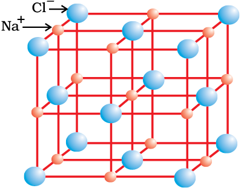
Rock salt structure
In ionic solids, the sum of the electron gain enthalpy and the ionization enthalpy may be positive but still the crystal structure gets stabilized due to the energy released in the formation of the crystal lattice. For example: the ionization enthalpy for Na+(g) formation from Na(g) is 495.8 kJ mol–1 ; while the electron gain enthalpy for the change Cl(g) + e–→ Cl– (g) is, – 348.7 kJ mol–1 only. The sum of the two, 147.1 kJ mol-1 is more than compensated for by the enthalpy of lattice formation of NaCl(s) (–788 kJ mol–1). Therefore, the energy released in the processes is more than the energy absorbed. Thus a qualitative measure of the stability of an ionic compound is provided by its enthalpy of lattice formation and not simply by achieving octet of electrons around the ionic species in gaseous state.
Since lattice enthalpy plays a key role in the formation of ionic compounds, it is important that we learn more about it.
4.2.1 Lattice Enthalpy
The Lattice Enthalpy of an ionic solid is defined as the energy required to completely separate one mole of a solid ionic compound into gaseous constituent ions. For example, the lattice enthalpy of NaCl is 788 kJ mol–1. This means that 788 kJ of energy is required to separate one mole of solid NaCl into one mole of Na+ (g) and one mole of Cl– (g) to an infinite distance.
This process involves both the attractive forces between ions of opposite charges and the repulsive forces between ions of like charge. The solid crystal being three-dimensional; it is not possible to calculate lattice enthalpy directly from the interaction of forces of attraction and repulsion only. Factors associated with the crystal geometry have to be included.
4.3 Bond Parameters
4.3.1 Bond Length
Bond length is defined as the equilibrium distance between the nuclei of two bonded atoms in a molecule. Bond lengths are measured by spectroscopic, X-ray diffraction and electron-diffraction techniques about which you will learn in higher classes. Each atom of the bonded pair contributes to the bond length (Fig. 4.1). In the case of a covalent bond, the contribution from each atom is called the covalent radius of that atom.

Fig. 4.1 The bond length in a covalent molecule AB.
R = rA + rB (R is the bond length and rA and rB are the covalent radii of atoms A and B respectively)
The covalent radius is measured approximately as the radius of an atom’s core which is in contact with the core of an adjacent atom in a bonded situation. The covalent radius is half of the distance between two similar atoms joined by a covalent bond in the same molecule. The van der Waals radius represents the overall size of the atom which includes its valence shell in a nonbonded situation. Further, the van der Waals radius is half of the distance between two similar atoms in separate molecules in a solid. Covalent and van der Waals radii of chlorine are depicted in Fig.4.2
Fig. 4.2 Covalent and van der Waals radii in a chlorine molecule .The inner circles correspond to the size of the chlorine atom (rvdw and rc are van der Waals and covalent radii respectively).
Some typical average bond lengths for single, double and triple bonds are shown in Table 4.2. Bond lengths for some common molecules are given in Table 4.3.
The covalent radii of some common elements are listed in Table 4.4.
4.3.2 Bond Angle
It is defined as the angle between the orbitals containing bonding electron pairs around the central atom in a molecule/complex ion. Bond angle is expressed in degree which can be experimentally determined by spectroscopic methods. It gives some idea regarding the distribution of orbitals around the central atom in a molecule/complex ion and hence it helps us in determining its shape. For example H–O–H bond angle in water can be represented as under :

4.3.3 Bond Enthalpy
It is defined as the amount of energy required to break one mole of bonds of a particular type between two atoms in a gaseous state. The unit of bond enthalpy is kJ mol–1. For example, the H – H bond enthalpy in hydrogen molecule is 435.8 kJ mol–1.
H2(g) → H(g) + H(g); 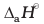 = 435.8 kJ mol–1
Similarly the bond enthalpy for molecules containing multiple bonds, for example O2 and N2 will be as under :
O2 (O = O) (g) → O(g) + O(g); = 498 kJ mol–1
N2 (N ≡ N) (g) → N(g) + N(g); = 946.0 kJ mol–1
It is important that larger the bond dissociation enthalpy, stronger will be the bond in the molecule. For a heteronuclear diatomic molecules like HCl, we have
HCl (g) → H(g) + Cl (g); = 431.0 kJ mol–1
In case of polyatomic molecules, the measurement of bond strength is more complicated. For example in case of H2O molecule, the enthalpy needed to break the two O – H bonds is not the same.
Table 4.2 Average Bond Lengths for Some Single, Double and Triple Bonds
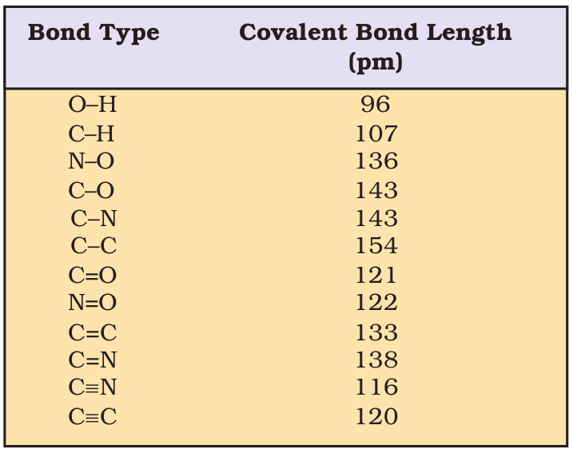
Table 4.3 Bond Lengths in Some Common Molecules
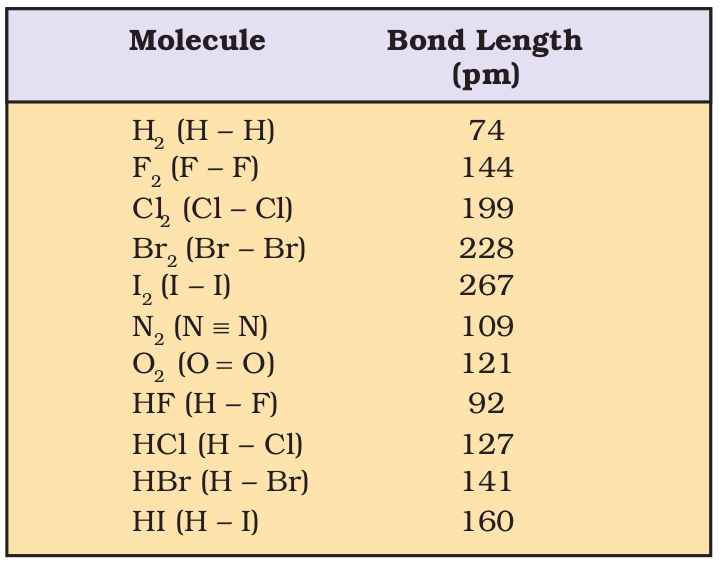
Table 4.4 Covalent Radii, *rcov/(pm)

* The values cited are for single bonds, except where otherwise indicated in parenthesis. (See also Unit 3 for periodic trends).
H2O(g) → H(g) + OH(g); 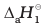 = 502 kJ mol–1
OH(g) → H(g) + O(g); 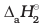 = 427 kJ mol–1
The difference in the ∆aH value shows that the second O – H bond undergoes some change because of changed chemical environment. This is the reason for some difference in energy of the same O – H bond in different molecules like C2H5OH (ethanol) and water. Therefore in polyatomic molecules the term mean or average bond enthalpy is used. It is obtained by dividing total bond dissociation enthalpy by the number of bonds broken as explained below in case of water molecule,
Average bond enthalpy = 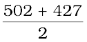
= 464.5 kJ mol–1
4.3.4 Bond Order
In the Lewis description of covalent bond, the Bond Order is given by the number of bonds between the two atoms in a molecule. The bond order, for example in H2 (with a single shared electron pair), in O2 (with two shared electron pairs) and in N2 (with three shared electron pairs) is 1,2,3 respectively. Similarly in CO (three shared electron pairs between C and O) the bond order is 3. For N2, bond order is 3 and its 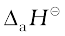 is 946 kJ mol–1; being one of the highest for a diatomic molecule.
Isoelectronic molecules and ions have identical bond orders; for example, F2 and O2 2– have bond order 1. N2, CO and NO+ have bond order 3.
A general correlation useful for understanding the stablities of molecules is that: with increase in bond order, bond enthalpy increases and bond length decreases.
4.3.5 Resonance Structures
It is often observed that a single Lewis structure is inadequate for the representation of a molecule in conformity with its experimentally determined parameters. For example, the ozone, O3 molecule can be equally represented by the structures I and II shown below:
Fig. 4.3 Resonance in the O3 molecule
(structures I and II represent the two canonical forms while the structure III is the resonance hybrid)
In both structures we have a O–O single bond and a O=O double bond. The normal O–O and O=O bond lengths are 148 pm and 121 pm respectively. Experimentally determined oxygen-oxygen bond lengths in the O3 molecule are same (128 pm). Thus the oxygen-oxygen bonds in the O3 molecule are intermediate between a double and a single bond. Obviously, this cannot be represented by either of the two Lewis structures shown above.
The concept of resonance was introduced to deal with the type of difficulty experienced in the depiction of accurate structures of molecules like O3. According to the concept of resonance, whenever a single Lewis structure cannot describe a molecule accurately, a number of structures with similar energy, positions of nuclei, bonding and non-bonding pairs of electrons are taken as the canonical structures of the hybrid which describes the molecule accurately. Thus for O3, the two structures shown above constitute the canonical structures or resonance structures and their hybrid i.e., the III structure represents the structure of O3 more accurately. This is also called resonance hybrid. Resonance is represented by a double headed arrow.
Some of the other examples of resonance structures are provided by the carbonate ion and the carbon dioxide molecule.
Problem 4.3
Explain the structure of CO32– ion in terms of resonance.
Solution
The single Lewis structure based on the presence of two single bonds and one double bond between carbon and oxygen atoms is inadequate to represent the molecule accurately as it represents unequal bonds. According to the experimental findings, all carbon to oxygen bonds in CO32– are equivalent. Therefore the carbonate ion is best described as a resonance hybrid of the canonical forms I, II, and III shown below.
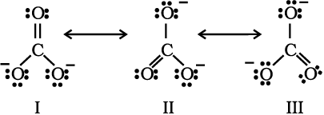
Fig.4.4 Resonance in CO32–, I, II and III represent the three canonical forms.
Problem 4.4
Explain the structure of CO2 molecule.
Solution
The experimentally determined carbon to oxygen bond length in CO2 is 115 pm. The lengths of a normal carbon to oxygen double bond (C=O) and carbon to oxygen triple bond (C≡O) are 121 pm and 110 pm respectively. The carbon-oxygen bond lengths in CO2 (115 pm) lie between the values for C=O and C≡O. Obviously, a single Lewis structure cannot depict this position and it becomes necessary to write more than one Lewis structures and to consider that the structure of CO2 is best described as a hybrid of the canonical or resonance forms I, II and III.
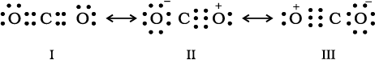
Fig. 4.5 Resonance in CO2 molecule, I, II and III represent the three canonical forms.
In general, it may be stated that
- Resonance stabilizes the molecule as the energy of the resonance hybrid is less than the energy of any single cannonical structure; and,
- Resonance averages the bond characteristics as a whole.
Thus the energy of the O3 resonance hybrid is lower than either of the two cannonical froms I and II (Fig 4.3).
Many misconceptions are associated with resonance and the same need to be dispelled. You should remember that :
- The cannonical forms have no real existence.
- The molecule does not exist for a certain fraction of time in one cannonical form and for other fractions of time in other cannonical forms.
- There is no such equilibrium between the cannonical forms as we have between tautomeric forms (keto and enol) in tautomerism.
- The molecule as such has a single structure which is the resonance hybrid of the cannonical forms and which cannot as such be depicted by a single Lewis structure.
4.3.6 Polarity of Bonds
The existence of a hundred percent ionic or covalent bond represents an ideal situation. In reality no bond or a compound is either completely covalent or ionic. Even in case of covalent bond between two hydrogen atoms, there is some ionic character.
When covalent bond is formed between two similar atoms, for example in H2, O2, Cl2, N2 or F2, the shared pair of electrons is equally attracted by the two atoms. As a result electron pair is situated exactly between the two identical nuclei. The bond so formed is called nonpolar covalent bond. Contrary to this in case of a heteronuclear molecule like HF, the shared electron pair between the two atoms gets displaced more towards fluorine since the electronegativity of fluorine (Unit 3) is far greater than that of hydrogen. The resultant covalent bond is a polar covalent bond.
As a result of polarisation, the molecule possesses the dipole moment (depicted below) which can be defined as the product of the magnitude of the charge and the distance between the centres of positive and negative charge. It is usually designated by a Greek letter ‘µ’. Mathematically, it is expressed as follows :
Dipole moment (µ) = charge (Q) × distance of separation (r)
Dipole moment is usually expressed in Debye units (D). The conversion factor is
1 D = 3.33564 × 10–30 C m
where C is coulomb and m is meter.
Further dipole moment is a vector quantity and by convention it is depicted by a small arrow with tail on the negative centre and head pointing towards the positive centre. But in chemistry presence of dipole moment is represented by the crossed arrow ( ) put on Lewis structure of the molecule. The cross is on positive end and arrow head is on negative end. For example the dipole moment of HF may be represented as :
) put on Lewis structure of the molecule. The cross is on positive end and arrow head is on negative end. For example the dipole moment of HF may be represented as :
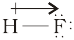
This arrow symbolises the direction of the shift of electron density in the molecule. Note that the direction of crossed arrow is opposite to the conventional direction of dipole moment vector.
Peter Debye, the Dutch chemist received Nobel prize in 1936 for his work on X-ray diffraction and dipole moments. The magnitude of the dipole moment is given in Debye units in order to honour him.
In case of polyatomic molecules the dipole moment not only depend upon the individual dipole moments of bonds known as bond dipoles but also on the spatial arrangement of various bonds in the molecule. In such case, the dipole moment of a molecule is the vector sum of the dipole moments of various bonds. For example in H2O molecule, which has a bent structure, the two O–H bonds are oriented at an angle of 104.50. Net dipole moment of 6.17 × 10–30 C m (1D = 3.33564 × 10–30 C m) is the resultant of the dipole moments of two O–H bonds.

Net Dipole moment, µ = 1.85 D
= 1.85 × 3.33564 × 10–30 C m = 6.17 ×10–30 C m
The dipole moment in case of BeF2 is zero. This is because the two equal bond dipoles point in opposite directions and cancel the effect of each other.

In tetra-atomic molecule, for example in BF3, the dipole moment is zero although the
B – F bonds are oriented at an angle of 120o to one another, the three bond moments give a net sum of zero as the resultant of any two is equal and opposite to the third.

Let us study an interesting case of NH3 and NF3 molecule. Both the molecules have pyramidal shape with a lone pair of electrons on nitrogen atom. Although fluorine is more electronegative than nitrogen, the resultant dipole moment of NH3 ( 4.90 × 10–30 C m) is greater than that of NF3 (0.8 × 10–30 C m). This is because, in case of NH3 the orbital dipole due to lone pair is in the same direction as the resultant dipole moment of the N – H bonds, whereas in NF3 the orbital dipole is in the direction opposite to the resultant dipole moment of the three N–F bonds. The orbital dipole because of lone pair decreases the effect of the resultant N – F bond moments, which results in the low dipole moment of NF3 as represented below :
Dipole moments of some molecules are shown in Table 4.5.
Just as all the covalent bonds have some partial ionic character, the ionic bonds also have partial covalent character. The partial covalent character of ionic bonds was discussed by Fajans in terms of the following rules:
- The smaller the size of the cation and the larger the size of the anion, the greater the covalent character of an ionic bond.
- The greater the charge on the cation, the greater the covalent character of the ionic bond.
- For cations of the same size and charge, the one, with electronic configuration (n-1)dnnso, typical of transition metals, is more polarising than the one with a noble gas configuration, ns2 np6, typical of alkali and alkaline earth metal cations.
The cation polarises the anion, pulling the electronic charge toward itself and thereby increasing the electronic charge between the two. This is precisely what happens in a covalent bond, i.e., buildup of electron charge density between the nuclei. The polarising power of the cation, the polarisability of the anion and the extent of distortion (polarisation) of anion are the factors, which determine the per cent covalent character of the ionic bond.
4.4 The Valence Shell Electron Pair Repulsion (VSEPR) Theory
As already explained, Lewis concept is unable to explain the shapes of molecules. This theory provides a simple procedure to predict the shapes of covalent molecules. Sidgwick and Powell in 1940, proposed a simple theory based on the repulsive interactions of the electron pairs in the valence shell of the atoms. It was further developed and redefined by Nyholm and Gillespie (1957).
Table 4.5 Dipole Moments of Selected Molecules
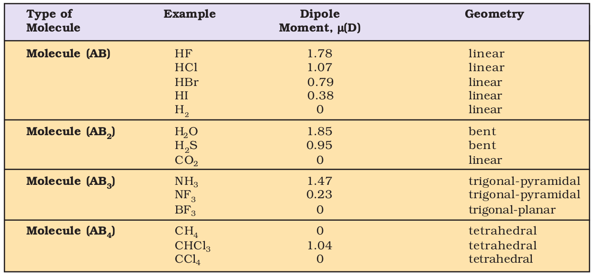
The main postulates of VSEPR theory are as follows:
- The shape of a molecule depends upon the number of valence shell electron pairs (bonded or nonbonded) around the central atom.
- Pairs of electrons in the valence shell repel one another since their electron clouds are negatively charged.
- These pairs of electrons tend to occupy such positions in space that minimise repulsion and thus maximise distance between them.
- The valence shell is taken as a sphere with the electron pairs localising on the spherical surface at maximum distance from one another.
- A multiple bond is treated as if it is a single electron pair and the two or three electron pairs of a multiple bond are treated as a single super pair.
- Where two or more resonance structures can represent a molecule, the VSEPR model is applicable to any such structure.
The repulsive interaction of electron pairs decrease in the order:
Lone pair (lp) – Lone pair (lp) > Lone pair (lp) – Bond pair (bp) > Bond pair (bp) – Bond pair (bp)
Nyholm and Gillespie (1957) refined the VSEPR model by explaining the important difference between the lone pairs and bonding pairs of electrons. While the lone pairs are localised on the central atom, each bonded pair is shared between two atoms. As a result, the lone pair electrons in a molecule occupy more space as compared to the bonding pairs of electrons. This results in greater repulsion between lone pairs of electrons as compared to the lone pair - bond pair and bond pair - bond pair repulsions. These repulsion effects result in deviations from idealised shapes and alterations in bond angles in molecules.
For the prediction of geometrical shapes of molecules with the help of VSEPR theory, it is convenient to divide molecules into two categories as (i) molecules in which the central atom has no lone pair and (ii) molecules in which the central atom has one or more lone pairs.
Table 4.6 shows the arrangement of electron pairs about a central atom A (without any lone pairs) and geometries of some molecules/ions of the type AB. Table 4.7 shows shapes of some simple molecules and ions in which the central atom has one or more lone pairs. Table 4.8 explains the reasons for the distortions in the geometry of the molecule.
As depicted in Table 4.6, in the compounds of AB2, AB3, AB4, AB5 and AB6, the arrangement of electron pairs and the B atoms around the central atom A are : linear, trigonal planar, tetrahedral, trigonal-bipyramidal and octahedral, respectively. Such arrangement can be seen in the molecules like BF3 (AB3), CH4 (AB4) and PCl5 (AB5) as depicted below by their ball and stick models.
Fig. 4.6 The shapes of molecules in which central atom has no lone pair
The VSEPR Theory is able to predict geometry of a large number of molecules, especially the compounds of p-block elements accurately. It is also quite successful in determining the geometry quite-accurately even when the energy difference between possible structures is very small. The theoretical basis of the VSEPR theory regarding the effects of electron pair repulsions on molecular shapes is not clear and continues to be a subject of doubt and discussion.
Table 4.6 Geometry of Molecules in which the Central Atom has No Lone Pair of Electrons

Table 4.7 Shape (geometry) of Some Simple Molecules/Ions with Central Ions having One or More Lone Pairs of Electrons(E).
Table 4.8 Shapes of Molecules containing Bond Pair and Lone Pair
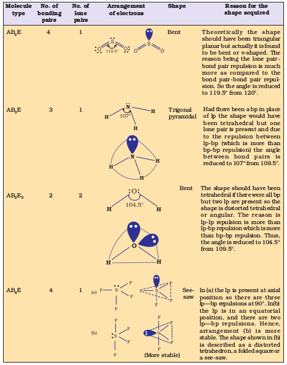
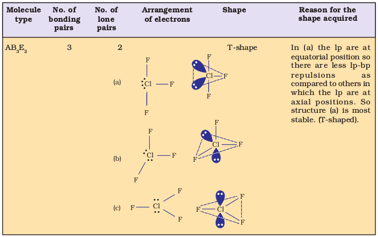
4.5 Valence Bond Theory
As we know that Lewis approach helps in writing the structure of molecules but it fails to explain the formation of chemical bond. It also does not give any reason for the difference in bond dissociation enthalpies and bond lengths in molecules like H2 (435.8 kJ mol-1, 74 pm) and F2 (155 kJ mol-1, 144 pm), although in both the cases a single covalent bond is formed by the sharing of an electron pair between the respective atoms. It also gives no idea about the shapes of polyatomic molecules.
Similarly the VSEPR theory gives the geometry of simple molecules but theoretically, it does not explain them and also it has limited applications. To overcome these limitations the two important theories based on quantum mechanical principles are introduced. These are valence bond (VB) theory and molecular orbital (MO) theory.
Valence bond theory was introduced by Heitler and London (1927) and developed further by Pauling and others. A discussion of the valence bond theory is based on the knowledge of atomic orbitals, electronic configurations of elements (Units 2), the overlap criteria of atomic orbitals, the hybridization of atomic orbitals and the principles of variation and superposition. A rigorous treatment of the VB theory in terms of these aspects is beyond the scope of this book. Therefore, for the sake of convenience, valence bond theory has been discussed in terms of qualitative and non-mathematical treatment only. To start with, let us consider the formation of hydrogen molecule which is the simplest of all molecules.
Consider two hydrogen atoms A and B approaching each other having nuclei NA and NB and electrons present in them are represented by eA and eB. When the two atoms are at large distance from each other, there is no interaction between them. As these two atoms approach each other, new attractive and repulsive forces begin to operate.
Attractive forces arise between:
(i) nucleus of one atom and its own electron that is NA – eA and NB– eB.
(ii) nucleus of one atom and electron of other atom i.e., NA– eB, NB– eA.
Similarly repulsive forces arise between
(i) electrons of two atoms like eA – eB,
(ii) nuclei of two atoms NA – NB.
Attractive forces tend to bring the two atoms close to each other whereas repulsive forces tend to push them apart (Fig. 4.7).
Experimentally it has been found that the magnitude of new attractive force is more than the new repulsive forces. As a result, two atoms approach each other and potential energy decreases.
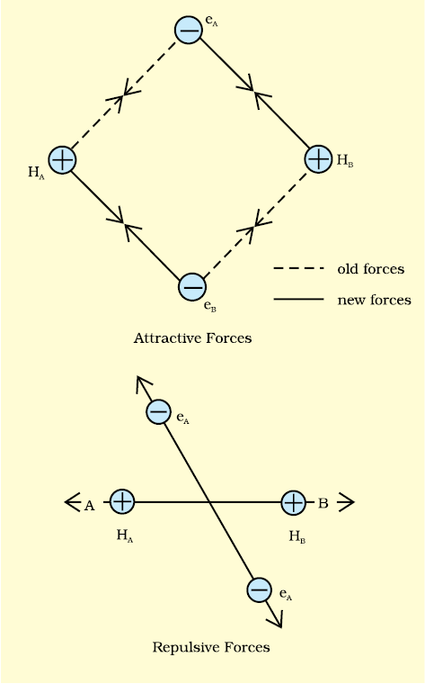
Fig. 4.7 Forces of attraction and repulsion during the formation of H2 molecule.
Ultimately a stage is reached where the net force of attraction balances the force of repulsion and system acquires minimum energy. At this stage two hydrogen atoms are said to be bonded together to form a stable molecule having the bond length of 74 pm.
Since the energy gets released when the bond is formed between two hydrogen atoms, the hydrogen molecule is more stable than that of isolated hydrogen atoms. The energy so released is called as bond enthalpy, which is corresponding to minimum in the curve depicted in Fig. 4.8. Conversely, 435.8 kJ of energy is required to dissociate one mole of H2 molecule.
H2(g) + 435.8 kJ mol–1 → H(g) + H(g)

Fig. 4.8 The potential energy curve for the formation of H2 molecule as a function of internuclear distance of the H atoms. The minimum in the curve corresponds to the most stable state of H2.
4.5.1 Orbital Overlap Concept
In the formation of hydrogen molecule, there is a minimum energy state when two hydrogen atoms are so near that their atomic orbitals undergo partial interpenetration. This partial merging of atomic orbitals is called overlapping of atomic orbitals which results in the pairing of electrons. The extent of overlap decides the strength of a covalent bond. In general, greater the overlap the stronger is the bond formed between two atoms. Therefore, according to orbital overlap concept, the formation of a covalent bond between two atoms results by pairing of electrons present in the valence shell having opposite spins.
4.5.2 Directional Properties of Bonds
As we have already seen, the covalent bond is formed by overlapping of atomic orbitals. The molecule of hydrogen is formed due to the overlap of 1s-orbitals of two H atoms.
In case of polyatomic molecules like CH4, NH3 and H2O, the geometry of the molecules is also important in addition to the bond formation. For example why is it so that CH4 molecule has tetrahedral shape and HCH bond angles are 109.5°? Why is the shape of NH3 molecule pyramidal ?
The valence bond theory explains the shape, the formation and directional properties of bonds in polyatomic molecules like CH4, NH3 and H2O, etc. in terms of overlap and hybridisation of atomic orbitals.
4.5.3 Overlapping of Atomic Orbitals
When orbitals of two atoms come close to form bond, their overlap may be positive, negative or zero depending upon the sign (phase) and direction of orientation of amplitude of orbital wave function in space (Fig. 4.9). Positive and negative sign on boundary surface diagrams in the Fig. 4.9 show the sign (phase) of orbital wave function and are not related to charge. Orbitals forming bond should have same sign (phase) and orientation in space. This is called positive overlap. Various overlaps of s and p orbitals are depicted in Fig. 4.9.

Fig.4.9 Positive, negative and zero overlaps of s and p atomic orbitals
The criterion of overlap, as the main factor for the formation of covalent bonds applies uniformly to the homonuclear/heteronuclear diatomic molecules and polyatomic molecules. We know that the shapes of CH4, NH3, and H2O molecules are tetrahedral, pyramidal and bent respectively. It would be therefore interesting to use VB theory to find out if these geometrical shapes can be explained in terms of the orbital overlaps.
Let us first consider the CH4 (methane) molecule. The electronic configuration of carbon in its ground state is [He]2s2 2p2 which in the excited state becomes [He] 2s1 2px1 2py1 2pz1. The energy required for this excitation is compensated by the release of energy due to overlap between the orbitals of carbon and the hydrogen.The four atomic orbitals of carbon, each with an unpaired electron can overlap with the 1s orbitals of the four H atoms which are also singly occupied. This will result in the formation of four C-H bonds. It will, however, be observed that while the three p orbitals of carbon are at 90° to one another, the HCH angle for these will also be 90°. That is three C-H bonds will be oriented at 90° to one another. The 2s orbital of carbon and the 1s orbital of H are spherically symmetrical and they can overlap in any direction. Therefore the direction of the fourth C-H bond cannot be ascertained. This description does not fit in with the tetrahedral HCH angles of 109.5°. Clearly, it follows that simple atomic orbital overlap does not account for the directional characteristics of bonds in CH4. Using similar procedure and arguments, it can be seen that in the case of NH3 and H2O molecules, the HNH and HOH angles should be 90°. This is in disagreement with the actual bond angles of 107° and 104.5° in the NH3 and H2O molecules respectively.
4.5.4 Types of Overlapping and Nature of Covalent Bonds
The covalent bond may be classified into two types depending upon the types of overlapping:
(i) Sigma(σ) bond, and (ii) pi(π) bond
(i) Sigma(σ) bond : This type of covalent bond is formed by the end to end (head-on) overlap of bonding orbitals along the internuclear axis. This is called as head on overlap or axial overlap. This can be formed by any one of the following types of combinations of atomic orbitals.
- s-s overlapping : In this case, there is overlap of two half filled s-orbitals along the internuclear axis as shown below :

- s-p overlapping: This type of overlap occurs between half filled s-orbitals of one atom and half filled p-orbitals of another atom.
- p–p overlapping : This type of overlap takes place between half filled p-orbitals of the two approaching atoms.
(ii) pi (π) bond : In the formation of π bond the atomic orbitals overlap in such a way that their axes remain parallel to each other and perpendicular to the internuclear axis. The orbitals formed due to sidewise overlapping consists of two saucer type charged clouds above and below the plane of the participating atoms.

4.5.5 Strength of Sigma and pi Bonds
Basically the strength of a bond depends upon the extent of overlapping. In case of sigma bond, the overlapping of orbitals takes place to a larger extent. Hence, it is stronger as compared to the pi bond where the extent of overlapping occurs to a smaller extent. Further, it is important to note that in the formation of multiple bonds between two atoms of a molecule, pi bond(s) is formed in addition to a sigma bond.
4.6 Hybridisation
In order to explain the characteristic geometrical shapes of polyatomic molecules like CH4, NH3 and H2O etc., Pauling introduced the concept of hybridisation. According to him the atomic orbitals combine to form new set of equivalent orbitals known as hybrid orbitals. Unlike pure orbitals, the hybrid orbitals are used in bond formation. The phenomenon is known as hybridisation which can be defined as the process of intermixing of the orbitals of slightly different energies so as to redistribute their energies, resulting in the formation of new set of orbitals of equivalent energies and shape. For example when one 2s and three 2p-orbitals of carbon hybridise, there is the formation of four new sp3 hybrid orbitals.
Salient features of hybridisation: The main features of hybridisation are as under :
1. The number of hybrid orbitals is equal to the number of the atomic orbitals that get hybridised.
2. The hybridised orbitals are always equivalent in energy and shape.
3. The hybrid orbitals are more effective in forming stable bonds than the pure atomic orbitals.
4. These hybrid orbitals are directed in space in some preferred direction to have minimum repulsion between electron pairs and thus a stable arrangement. Therefore, the type of hybridisation indicates the geometry of the molecules.
Important conditions for hybridisation
(i) The orbitals present in the valence shell of the atom are hybridised.
(ii) The orbitals undergoing hybridisation should have almost equal energy.
(iii) Promotion of electron is not essential condition prior to hybridisation.
(iv) It is not necessary that only half filled orbitals participate in hybridisation. In some cases, even filled orbitals of valence shell take part in hybridisation.
4.6.1 Types of Hybridisation
There are various types of hybridisation involving s, p and d orbitals. The different types of hybridisation are as under:
(I) sp hybridisation: This type of hybridisation involves the mixing of one s and one p orbital resulting in the formation of two equivalent sp hybrid orbitals. The suitable orbitals for sp hybridisation are s and pz, if the hybrid orbitals are to lie along the z-axis. Each sp hybrid orbitals has 50% s-character and 50% p-character. Such a molecule in which the central atom is sp-hybridised and linked directly to two other central atoms possesses linear geometry. This type of hybridisation is also known as diagonal hybridisation.
The two sp hybrids point in the opposite direction along the z-axis with projecting positive lobes and very small negative lobes, which provides more effective overlapping resulting in the formation of stronger bonds.
Example of molecule having sp hybridisation
BeCl2: The ground state electronic configuration of Be is 1s22s2. In the exited state one of the 2s-electrons is promoted to vacant 2p orbital to account for its bivalency. One 2s and one 2p-orbital gets hybridised to form two sp hybridised orbitals. These two sp hybrid orbitals are oriented in opposite direction forming an angle of 180°. Each of the sp hybridised orbital overlaps with the 2p-orbital of chlorine axially and form two Be-Cl sigma bonds. This is shown in Fig. 4.10.
Fig.4.10 (a) Formation of sp hybrids from s and p orbitals; (b) Formation of the linear BeCl2 molecule
(II) sp2 hybridisation : In this hybridisation there is involvement of one s and two p-orbitals in order to form three equivalent sp2 hybridised orbitals. For example, in BCl3 molecule, the ground state electronic configuration of central boron atom is 1s22s22p1. In the excited state, one of the 2s electrons is promoted to vacant 2p orbital as a result boron has three unpaired electrons. These three orbitals (one 2s and two 2p) hybridise to form three sp2 hybrid orbitals. The three hybrid orbitals so formed are oriented in a trigonal planar arrangement and overlap with 2p orbitals of chlorine to form three B-Cl bonds. Therefore, in BCl3 (Fig. 4.11), the geometry is trigonal planar with ClBCl bond angle of 120°.
Fig.4.11 Formation of sp2 hybrids and the BCl3 molecule
(III) sp3 hybridisation: This type of hybridisation can be explained by taking the example of CH4 molecule in which there is mixing of one s-orbital and three p-orbitals of the valence shell to form four sp3 hybrid orbital of equivalent energies and shape. There is 25% s-character and 75% p-character in each sp3 hybrid orbital. The four sp3 hybrid orbitals so formed are directed towards the four corners of the tetrahedron. The angle between sp3 hybrid orbital is 109.5° as shown in Fig. 4.12.
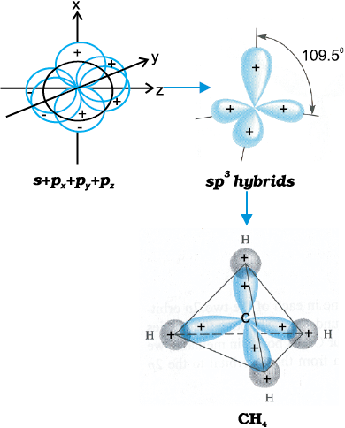
Fig. 4.12 Formation of sp3 hybrids by the combination of s , px , py and pz atomic orbitals of carbon and the formation of CH4 molecule
The structure of NH3 and H2O molecules can also be explained with the help of sp3 hybridisation. In NH3, the valence shell (outer) electronic configuration of nitrogen in the ground state is 2s22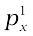2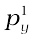2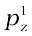 having three unpaired electrons in the sp3 hybrid orbitals and a lone pair of electrons is present in the fourth one. These three hybrid orbitals overlap with 1s orbitals of hydrogen atoms to form three N–H sigma bonds. We know that the force of repulsion between a lone pair and a bond pair is more than the force of repulsion between two bond pairs of electrons. The molecule thus gets distorted and the bond angle is reduced to 107° from 109.5°. The geometry of such a molecule will be pyramidal as shown in Fig. 4.13.

Fig.4.13 Formation of NH3 molecule
In case of H2O molecule, the four oxygen orbitals (one 2s and three 2p) undergo sp3 hybridisation forming four sp3 hybrid orbitals out of which two contain one electron each and the other two contain a pair of electrons. These four sp3 hybrid orbitals acquire a tetrahedral geometry, with two corners occupied by hydrogen atoms while the other two by the lone pairs. The bond angle in this case is reduced to 104.5° from 109.5° (Fig. 4.14) and the molecule thus acquires a V-shape or angular geometry.

Fig.4.14 Formation of H2O molecule
4.6.2 Other Examples of sp3, sp2 and sp Hybridisation
sp3 Hybridisation in C2H6 molecule: In ethane molecule both the carbon atoms assume sp3 hybrid state. One of the four sp3 hybrid orbitals of carbon atom overlaps axially with similar orbitals of other atom to form sp3-sp3 sigma bond while the other three hybrid orbitals of each carbon atom are used in forming sp3–s sigma bonds with hydrogen atoms as discussed in section 4.6.1(iii). Therefore in ethane C–C bond length is 154 pm and each C–H bond length is 109 pm.
sp2 Hybridisation in C2H4: In the formation of ethene molecule, one of the sp2 hybrid orbitals of carbon atom overlaps axially with sp2 hybridised orbital of another carbon atom to form C–C sigma bond. While the other two sp2 hybrid orbitals of each carbon atom are used for making sp2–s sigma bond with two hydrogen atoms. The unhybridised orbital (2px or 2py) of one carbon atom overlaps sidewise with the similar orbital of the other carbon atom to form weak π bond, which consists of two equal electron clouds distributed above and below the plane of carbon and hydrogen atoms.
Thus, in ethene molecule, the carbon-carbon bond consists of one sp2–sp2 sigma bond and one pi (π ) bond between p orbitals which are not used in the hybridisation and are perpendicular to the plane of molecule; the bond length 134 pm. The C–H bond is sp2–s sigma with bond length 108 pm. The H–C–H bond angle is 117.6° while the H–C–C angle is 121°. The formation of sigma and pi bonds in ethene is shown in Fig. 4.15.
Fig. 4.15 Formation of sigma and pi bonds in ethene
sp Hybridisation in C2H2 : In the formation of ethyne molecule, both the carbon atoms undergo sp-hybridisation having two unhybridised orbital i.e., 2py and 2px. One sp hybrid orbital of one carbon atom overlaps axially with sp hybrid orbital of the other carbon atom to form C–C sigma bond, while the other hybridised orbital of each carbon atom overlaps axially with the half filled s orbital of hydrogen atoms forming σ bonds. Each of the two unhybridised p orbitals of both the carbon atoms overlaps sidewise to form two π bonds between the carbon atoms. So the triple bond between the two carbon atoms is made up of one sigma and two pi bonds as shown in Fig. 4.16.


Fig.4.16 Formation of sigma and pi bonds in ethyne
4.6.3 Hybridisation of Elements involving d Orbitals
The elements present in the third period contain d orbitals in addition to s and p orbitals. The energy of the 3d orbitals are comparable to the energy of the 3s and 3p orbitals. The energy of 3d orbitals are also comparable to those of 4s and 4p orbitals. As a consequence the hybridisation involving either 3s, 3p and 3d or 3d, 4s and 4p is possible. However, since the difference in energies of 3p and 4s orbitals is significant, no hybridisation involving 3p, 3d and 4s orbitals is possible.
The important hybridisation schemes involving s, p and d orbitals are summarised below:
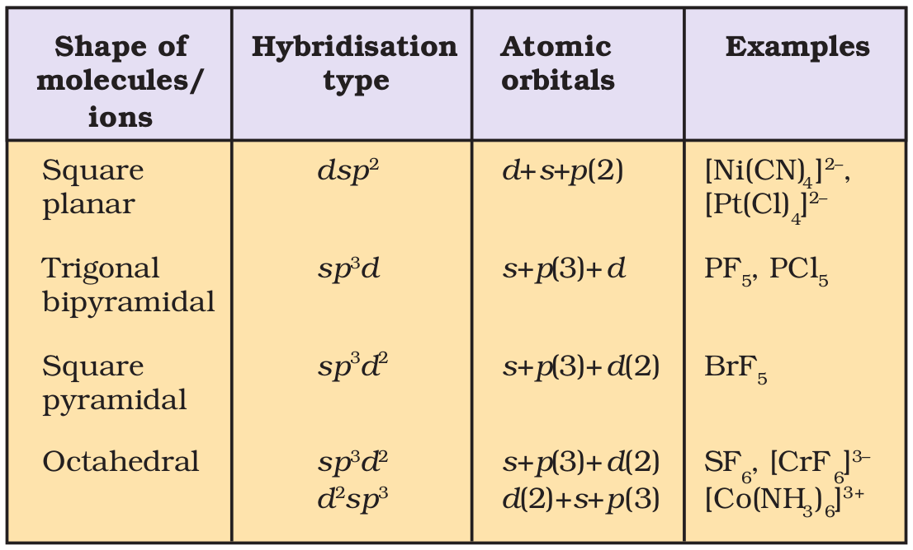
(i) Formation of PCl5 (sp3d hybridisation): The ground state and the excited state outer electronic configurations of phosphorus (Z=15) are represented below.
sp3d hybrid orbitals filled by electron pairs donated by five Cl atoms.

Now the five orbitals (i.e., one s, three p and one d orbitals) are available for hybridisation to yield a set of five sp3d hybrid orbitals which are directed towards the five corners of a trigonal bipyramidal as depicted in the Fig. 4.17.
Fig. 4.17 Trigonal bipyramidal geometry of PCl5 molecule
It should be noted that all the bond angles in trigonal bipyramidal geometry are not equivalent. In PCl5 the five sp3d orbitals of phosphorus overlap with the singly occupied p orbitals of chlorine atoms to form five P–Cl sigma bonds. Three P–Cl bond lie in one plane and make an angle of 120° with each other; these bonds are termed as equatorial bonds. The remaining two P–Cl bonds–one lying above and the other lying below the equatorial plane, make an angle of 90° with the plane. These bonds are called axial bonds. As the axial bond pairs suffer more repulsive interaction from the equatorial bond pairs, therefore axial bonds have been found to be slightly longer and hence slightly weaker than the equatorial bonds; which makes PCl5 molecule more reactive.
(ii) Formation of SF6 (sp3d2 hybridisation): In SF6 the central sulphur atom has the ground state outer electronic configuration 3s23p4. In the exited state the available six orbitals i.e., one s, three p and two d are singly occupied by electrons. These orbitals hybridise to form six new sp3d2 hybrid orbitals, which are projected towards the six corners of a regular octahedron in SF6. These six sp3d2 hybrid orbitals overlap with singly occupied orbitals of fluorine atoms to form six S–F sigma bonds. Thus SF6 molecule has a regular octahedral geometry as shown in Fig. 4.18.

sp3d2 hybridisation

Fig. 4.18 Octahedral geometry of SF6 molecule
4.7 Molecular Orbital Theory
Molecular orbital (MO) theory was developed by F. Hund and R.S. Mulliken in 1932. The salient features of this theory are :
(i) The electrons in a molecule are present in the various molecular orbitals as the electrons of atoms are present in the various atomic orbitals.
(ii) The atomic orbitals of comparable energies and proper symmetry combine to form molecular orbitals.
(iii) While an electron in an atomic orbital is influenced by one nucleus, in a molecular orbital it is influenced by two or more nuclei depending upon the number of atoms in the molecule. Thus, an atomic orbital is monocentric while a molecular orbital is polycentric.
(iv) The number of molecular orbital formed is equal to the number of combining atomic orbitals. When two atomic orbitals combine, two molecular orbitals are formed. One is known as bonding molecular orbital while the other is called antibonding molecular orbital.
(v) The bonding molecular orbital has lower energy and hence greater stability than the corresponding antibonding molecular orbital.
(vi) Just as the electron probability distribution around a nucleus in an atom is given by an atomic orbital, the electron probability distribution around a group of nuclei in a molecule is given by a molecular orbital.
(vii) The molecular orbitals like atomic orbitals are filled in accordance with the aufbau principle obeying the Pauli’s exclusion principle and the Hund’s rule.
4.7.1 Formation of Molecular Orbitals Linear Combination of Atomic Orbitals (LCAO)
According to wave mechanics, the atomic orbitals can be expressed by wave functions (ψ ’s) which represent the amplitude of the electron waves. These are obtained from the solution of Schrödinger wave equation. However, since it cannot be solved for any system containing more than one electron, molecular orbitals which are one electron wave functions for molecules are difficult to obtain directly from the solution of Schrödinger wave equation. To overcome this problem, an approximate method known as linear combination of atomic orbitals (LCAO) has been adopted.
Let us apply this method to the homonuclear diatomic hydrogen molecule. Consider the hydrogen molecule consisting of two atoms A and B. Each hydrogen atom in the ground state has one electron in 1s orbital. The atomic orbitals of these atoms may be represented by the wave functions ψA and ψB. Mathematically, the formation of molecular orbitals may be described by the linear combination of atomic orbitals that can take place by addition and by subtraction of wave functions of individual atomic orbitals as shown below :
ψMO = ψA + ψB
Therefore, the two molecular orbitals σ and σ* are formed as :
σ = ψA + ψB
σ* = ψA – ψB
The molecular orbital σ formed by the addition of atomic orbitals is called the bonding molecular orbital while the molecular orbital σ* formed by the subtraction of atomic orbital is called antibonding molecular orbital as depicted in Fig. 4.19.

Fig.4.19 Formation of bonding ( σ) and antibonding ( σ*) molecular orbitals by the linear combination of atomic orbitals ψA and ψB centered on two atoms A and B respectively.
Qualitatively, the formation of molecular orbitals can be understood in terms of the constructive or destructive interference of the electron waves of the combining atoms. In the formation of bonding molecular orbital, the two electron waves of the bonding atoms reinforce each other due to constructive interference while in the formation of antibonding molecular orbital, the electron waves cancel each other due to destructive interference. As a result, the electron density in a bonding molecular orbital is located between the nuclei of the bonded atoms because of which the repulsion between the nuclei is very less while in case of an antibonding molecular orbital, most of the electron density is located away from the space between the nuclei. Infact, there is a nodal plane (on which the electron density is zero) between the nuclei and hence the repulsion between the nuclei is high. Electrons placed in a bonding molecular orbital tend to hold the nuclei together and stabilise a molecule. Therefore, a bonding molecular orbital always possesses lower energy than either of the atomic orbitals that have combined to form it. In contrast, the electrons placed in the antibonding molecular orbital destabilise the molecule. This is because the mutual repulsion of the electrons in this orbital is more than the attraction between the electrons and the nuclei, which causes a net increase in energy.
It may be noted that the energy of the antibonding orbital is raised above the energy of the parent atomic orbitals that have combined and the energy of the bonding orbital has been lowered than the parent orbitals. The total energy of two molecular orbitals, however, remains the same as that of two original atomic orbitals.
4.7.2 Conditions for the Combination of Atomic Orbitals
The linear combination of atomic orbitals to form molecular orbitals takes place only if the following conditions are satisfied:
1. The combining atomic orbitals must have the same or nearly the same energy. This means that 1s orbital can combine with another 1s orbital but not with 2s orbital because the energy of 2s orbital is appreciably higher than that of 1s orbital. This is not true if the atoms are very different.
2. The combining atomic orbitals must have the same symmetry about the molecular axis. By convention z-axis is taken as the molecular axis. It is important to note that atomic orbitals having same or nearly the same energy will not combine if they do not have the same symmetry. For example, 2pz orbital of one atom can combine with 2pz orbital of the other atom but not with the 2px or 2py orbitals because of their different symmetries.
3. The combining atomic orbitals must overlap to the maximum extent. Greater the extent of overlap, the greater will be the electron-density between the nuclei of a molecular orbital.
4.7.3 Types of Molecular Orbitals
Molecular orbitals of diatomic molecules are designated as σ (sigma), π (pi), δ (delta), etc.
In this nomenclature, the sigma (σ) molecular orbitals are symmetrical around the bond-axis while pi (π) molecular orbitals are not symmetrical. For example, the linear combination of 1s orbitals centered on two nuclei produces two molecular orbitals which are symmetrical around the bond-axis. Such molecular orbitals are of the σ type and are designated as σ1s and σ*1s [Fig. 4.20(a),page 124]. If internuclear axis is taken to be in the z-direction, it can be seen that a linear combination of 2pz- orbitals of two atoms also produces two sigma molecular orbitals designated as σ2pz and σ*2pz. [Fig. 4.20(b)]
Molecular orbitals obtained from 2px and 2py orbitals are not symmetrical around the bond axis because of the presence of positive lobes above and negative lobes below the molecular plane. Such molecular orbitals, are labelled as π and π* [Fig. 4.20(c)]. A π bonding MO has larger electron density above and below the inter-nuclear axis. The π* antibonding MO has a node between the nuclei.
4.7.4 Energy Level Diagram for Molecular Orbitals
We have seen that 1s atomic orbitals on two atoms form two molecular orbitals designated as σ1s and σ*1s. In the same manner, the 2s and 2p atomic orbitals (eight atomic orbitals on two atoms) give rise to the following eight molecular orbitals:

Fig. 4.20 Contours and energies of bonding and antibonding molecular orbitals formed through combinations of (a) 1s atomic orbitals; (b) 2pz atomic orbitals and (c) 2px atomic orbitals.
Antibonding MOs σ*2s σ*2pz π*2px π*2py
Bonding MOs σ2s σ2pz π2px π2py
The energy levels of these molecular orbitals have been determined experimentally from spectroscopic data for homonuclear diatomic molecules of second row elements of the periodic table. The increasing order of energies of various molecular orbitals for O2 and F2 is given below :
σ1s < σ*1s < σ2s < σ*2s <σ2pz<(π 2px = π 2py) < (π *2px= π *2py)<σ*2pz
However, this sequence of energy levels of molecular orbitals is not correct for the remaining molecules Li2, Be2, B2, C2, N2. For instance, it has been observed experimentally that for molecules such as B2, C2, N2 etc. the increasing order of energies of various molecular orbitals is
σ1s < σ*1s < σ2s < σ*2s < (π 2px = π 2py) <σ2pz < (π *2px= π *2py) < σ*2pz
The important characteristic feature of this order is that the energy of σ2pz molecular orbital is higher than that of π2px and π2py molecular orbitals.
4.7.5 Electronic Configuration and Molecular Behaviour
The distribution of electrons among various molecular orbitals is called the electronic configuration of the molecule. From the electronic configuration of the molecule, it is possible to get important information about the molecule as discussed below.
Stability of Molecules: If Nb is the number of electrons occupying bonding orbitals and Na the number occupying the antibonding orbitals, then
(i) the molecule is stable if Nb is greater than Na, and
(ii) the molecule is unstable if Nb is less than Na.
In (i) more bonding orbitals are occupied and so the bonding influence is stronger and a stable molecule results. In (ii) the antibonding influence is stronger and therefore the molecule is unstable.
Bond order
Bond order (b.o.) is defined as one half the difference between the number of electrons present in the bonding and the antibonding orbitals i.e.,
Bond order (b.o.) = ½ (Nb–Na)
The rules discussed above regarding the stability of the molecule can be restated in terms of bond order as follows: A positive bond order (i.e., Nb > Na) means a stable molecule while a negative (i.e., Nb<Na) or zero (i.e., Nb = Na) bond order means an unstable molecule.
Nature of the bond
Integral bond order values of 1, 2 or 3 correspond to single, double or triple bonds respectively as studied in the classical concept.
Bond-length
The bond order between two atoms in a molecule may be taken as an approximate measure of the bond length. The bond length decreases as bond order increases.
Magnetic nature
If all the molecular orbitals in a molecule are doubly occupied, the substance is diamagnetic (repelled by magnetic field). However if one or more molecular orbitals are singly occupied it is paramagnetic (attracted by magnetic field), e.g., O2 molecule.
4.8 BONDING IN SOME HOMONUCLEAR DIATOMIC MOLECULES
In this section we shall discuss bonding in some homonuclear diatomic molecules.
1. Hydrogen molecule (H2 ): It is formed by the combination of two hydrogen atoms. Each hydrogen atom has one electron in 1s orbital. Therefore, in all there are two electrons in hydrogen molecule which are present in σ1s molecular orbital. So electronic configuration of hydrogen molecule is
H2 : (σ1s)2
The bond order of H2 molecule can be calculated as given below:
Bond order = 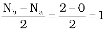
This means that the two hydrogen atoms are bonded together by a single covalent bond. The bond dissociation energy of hydrogen molecule has been found to be 438 kJ mol–1 and bond length equal to 74 pm. Since no unpaired electron is present in hydrogen molecule, therefore, it is diamagnetic.
2. Helium molecule (He2 ): The electronic configuration of helium atom is 1s2. Each helium atom contains 2 electrons, therefore, in He2 molecule there would be 4 electrons. These electrons will be accommodated in σ1s and σ*1s molecular orbitals leading to electronic configuration:
He2 : (σ1s)2 (σ*1s)2
Bond order of He2 is ½(2 – 2) = 0
He2 molecule is therefore unstable and does not exist.
Similarly, it can be shown that Be2 molecule (σ1s)2 (σ*1s)2 (σ2s)2 (σ*2s)2 also does not exist.
3. Lithium molecule (Li2 ): The electronic configuration of lithium is 1s2, 2s1 . There are six electrons in Li2. The electronic configuration of Li2 molecule, therefore, is
Li2 : (σ1s)2 (σ*1s)2 (σ2s)2
The above configuration is also written as KK(σ2s)2 where KK represents the closed K shell structure (σ1s)2 (σ*1s)2.
From the electronic configuration of Li2 molecule it is clear that there are four electrons present in bonding molecular orbitals and two electrons present in antibonding molecular orbitals. Its bond order, therefore, is ½ (4 – 2) = 1. It means that Li2 molecule is stable and since it has no unpaired electrons it should be diamagnetic. Indeed diamagnetic Li2 molecules are known to exist in the vapour phase.
4. Carbon molecule (C2 ): The electronic configuration of carbon is 1s2 2s2 2p2. There are twelve electrons in C2. The electronic configuration of C2 molecule, therefore, is
C2 : 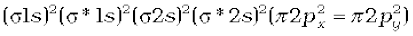
or 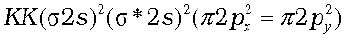
The bond order of C2 is ½ (8 – 4) = 2 and C2 should be diamagnetic. Diamagnetic C2 molecules have indeed been detected in vapour phase. It is important to note that double bond in C2 consists of both pi bonds because of the presence of four electrons in two pi molecular orbitals. In most of the other molecules a double bond is made up of a sigma bond and a pi bond. In a similar fashion the bonding in N2 molecule can be discussed.
5. Oxygen molecule (O2 ): The electronic configuration of oxygen atom is 1s2 2s2 2p4. Each oxygen atom has 8 electrons, hence, in O2 molecule there are 16 electrons. The electronic configuration of O2 molecule, therefore, is
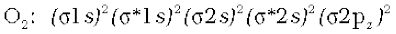
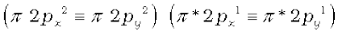 or
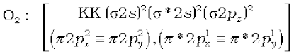
From the electronic configuration of O2 molecule it is clear that ten electrons are present in bonding molecular orbitals and six electrons are present in antibonding molecular orbitals. Its bond order, therefore, is
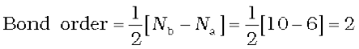
So in oxygen molecule, atoms are held by a double bond. Moreover, it may be noted that it contains two unpaired electrons in π *2px and π *2py molecular orbitals, therefore, O2 molecule should be paramagnetic, a prediction that corresponds to experimental observation. In this way, the theory successfully explains the paramagnetic nature of oxygen.
Similarly, the electronic configurations of other homonuclear diatomic molecules of the second row of the periodic table can be written. In Fig.4.21 are given the molecular orbital occupancy and molecular properties for B2 through Ne2. The sequence of MOs and their electron population are shown. The bond energy, bond length, bond order, magnetic properties and valence electron configuration appear below the orbital diagrams.

Fig. 4.21 MO occupancy and molecular properties for B2 through Ne2.
4.9 HYDROGEN BONDING
Nitrogen, oxygen and fluorine are the higly electronegative elements. When they are attached to a hydrogen atom to form covalent bond, the electrons of the covalent bond are shifted towards the more electronegative atom. This partially positively charged hydrogen atom forms a bond with the other more electronegative atom. This bond is known as hydrogen bond and is weaker than the covalent bond. For example, in HF molecule, the hydrogen bond exists between hydrogen atom of one molecule and fluorine atom of another molecule as depicted below :
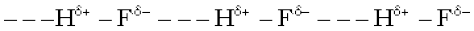
Here, hydrogen bond acts as a bridge between two atoms which holds one atom by covalent bond and the other by hydrogen bond. Hydrogen bond is represented by a dotted line (– – –) while a solid line represents the covalent bond. Thus, hydrogen bond can be defined as the attractive force which binds hydrogen atom of one molecule with the electronegative atom (F, O or N) of another molecule.
4.9.1 Cause of Formation of Hydrogen Bond
When hydrogen is bonded to strongly electronegative element ‘X’, the electron pair shared between the two atoms moves far away from hydrogen atom. As a result the hydrogen atom becomes highly electropositive with respect to the other atom ‘X’. Since there is displacement of electrons towards X, the hydrogen acquires fractional positive charge (δ +) while ‘X’ attain fractional negative charge (δ–). This results in the formation of a polar molecule having electrostatic force of attraction which can be represented as :
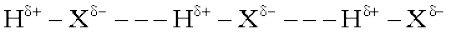
The magnitude of H-bonding depends on the physical state of the compound. It is maximum in the solid state and minimum in the gaseous state. Thus, the hydrogen bonds have strong influence on the structure and properties of the compounds.
4.9.2 Types of H-Bonds
There are two types of H-bonds
(i) Intermolecular hydrogen bond
(ii) Intramolecular hydrogen bond
(1) Intermolecular hydrogen bond : It is formed between two different molecules of the same or different compounds. For example, H-bond in case of HF molecule, alcohol or water molecules, etc.
(2) Intramolecular hydrogen bond : It is formed when hydrogen atom is in between the two highly electronegative (F, O, N) atoms present within the same molecule. For example, in o-nitrophenol the hydrogen is in between the two oxygen atoms.
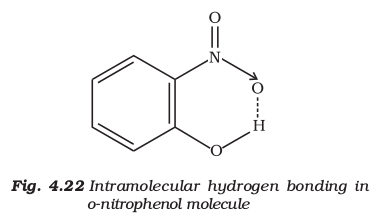
SUMMARY
Kössel’s first insight into the mechanism of formation of electropositive and electronegative ions related the process to the attainment of noble gas configurations by the respective ions. Electrostatic attraction between ions is the cause for their stability. This gives the concept of electrovalency.
The first description of covalent bonding was provided by Lewis in terms of the sharing of electron pairs between atoms and he related the process to the attainment of noble gas configurations by reacting atoms as a result of sharing of electrons. The Lewis dot symbols show the number of valence electrons of the atoms of a given element and Lewis dot structures show pictorial representations of bonding in molecules.
An ionic compound is pictured as a three-dimensional aggregation of positive and negative ions in an ordered arrangement called the crystal lattice. In a crystalline solid there is a charge balance between the positive and negative ions. The crystal lattice is stabilized by the enthalpy of lattice formation.
While a single covalent bond is formed by sharing of an electron pair between two atoms, multiple bonds result from the sharing of two or three electron pairs. Some bonded atoms have additional pairs of electrons not involved in bonding. These are called lone-pairs of electrons. A Lewis dot structure shows the arrangement of bonded pairs and lone pairs around each atom in a molecule. Important parameters, associated with chemical bonds, like: bond length, bond angle, bond enthalpy, bond order and bond polarity have significant effect on the properties of compounds.
A number of molecules and polyatomic ions cannot be described accurately by a single Lewis structure and a number of descriptions (representations) based on the same skeletal structure are written and these taken together represent the molecule or ion. This is a very important and extremely useful concept called resonance. The contributing structures or canonical forms taken together constitute the resonance hybrid which represents the molecule or ion.
The VSEPR model used for predicting the geometrical shapes of molecules is based on the assumption that electron pairs repel each other and, therefore, tend to remain as far apart as possible. According to this model, molecular geometry is determined by repulsions between lone pairs and lone pairs ; lone pairs and bonding pairs andbonding pairs and bonding pairs. The order of these repulsions being : lp-lp > lp-bp > bp-bp
The valence bond (VB) approach to covalent bonding is basically concerned with the energetics of covalent bond formation about which the Lewis and VSEPR models are silent. Basically the VB theory discusses bond formation in terms of overlap of orbitals. For example the formation of the H2 molecule from two hydrogen atoms involves the overlap of the 1s orbitals of the two H atoms which are singly occupied. It is seen that the potential energy of the system gets lowered as the two H atoms come near to each other. At the equilibrium inter-nuclear distance (bond distance) the energy touches a minimum. Any attempt to bring the nuclei still closer results in a sudden increase in energy and consequent destabilization of the molecule. Because of orbital overlap the electron density between the nuclei increases which helps in bringing them closer. It is however seen that the actual bond enthalpy and bond length values are not obtained by overlap alone and other variables have to be taken into account.
For explaining the characteristic shapes of polyatomic molecules Pauling introduced the concept of hybridisation of atomic orbitals. sp,sp2, sp3 hybridizations of atomic orbitals of Be, B,C, N and O are used to explain the formation and geometrical shapes of molecules like BeCl2, BCl3, CH4, NH3 and H2O. They also explain the formation of multiple bonds in molecules like C2H2 and C2H4.
The molecular orbital (MO) theory describes bonding in terms of the combination and arrangment of atomic orbitals to form molecular orbitals that are associated with the molecule as a whole. The number of molecular orbitals are always equal to the number of atomic orbitals from which they are formed. Bonding molecular orbitals increase electron density between the nuclei and are lower in energy than the individual atomic orbitals. Antibonding molecular orbitals have a region of zero electron density between the nuclei and have more energy than the individual atomic orbitals.
The electronic configuration of the molecules is written by filling electrons in the molecular orbitals in the order of increasing energy levels. As in the case of atoms, the Pauli exclusion principle and Hund’s rule are applicable for the filling of molecular orbitals. Molecules are said to be stable if the number of elctrons in bonding molecular orbitals is greater than that in antibonding molecular orbitals.
Hydrogen bond is formed when a hydrogen atom finds itself between two highly electronegative atoms such as F, O and N. It may be intermolecular (existing between two or more molecules of the same or different substances) or intramolecular (present within the same molecule). Hydrogen bonds have a powerful effect on the structure and properties of many compounds.
EXERCISES
4.1 Explain the formation of a chemical bond.
4.2 Write Lewis dot symbols for atoms of the following elements : Mg, Na, B, O, N, Br.
4.3 Write Lewis symbols for the following atoms and ions:
S and S2–; Al and Al3+; H and H–
4.4 Draw the Lewis structures for the following molecules and ions :
H2S, SiCl4, BeF2, 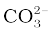, HCOOH
4.5 Define octet rule. Write its significance and limitations.
4.6 Write the favourable factors for the formation of ionic bond.
4.7 Discuss the shape of the following molecules using the VSEPR model:
BeCl2, BCl3, SiCl4, AsF5, H2S, PH3
4.8 Although geometries of NH3 and H2O molecules are distorted tetrahedral, bond angle in water is less than that of ammonia. Discuss.
4.9 How do you express the bond strength in terms of bond order ?
4.10 Define the bond length.
4.11 Explain the important aspects of resonance with reference to the  ion.
ion.
4.12 H3PO3 can be represented by structures 1 and 2 shown below. Can these two structures be taken as the canonical forms of the resonance hybrid representing H3PO3 ? If not, give reasons for the same.

4.13 Write the resonance structures for SO3, NO2 and 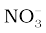.
4.14 Use Lewis symbols to show electron transfer between the following atoms to form cations and anions : (a) K and S (b) Ca and O (c) Al and N.
4.15 Although both CO2 and H2O are triatomic molecules, the shape of H2O molecule is bent while that of CO2 is linear. Explain this on the basis of dipole moment.
4.16 Write the significance/applications of dipole moment.
4.17 Define electronegativity. How does it differ from electron gain enthalpy ?
4.18 Explain with the help of suitable example polar covalent bond.
4.19 Arrange the bonds in order of increasing ionic character in the molecules: LiF, K2O, N2, SO2 and ClF3.
4.20 The skeletal structure of CH3COOH as shown below is correct, but some of the bonds are shown incorrectly. Write the correct Lewis structure for acetic acid.

4.21 Apart from tetrahedral geometry, another possible geometry for CH4 is square planar with the four H atoms at the corners of the square and the C atom at its centre. Explain why CH4 is not square planar ?
4.22 Explain why BeH2 molecule has a zero dipole moment although the Be–H bonds are polar.
4.23 Which out of NH3 and NF3 has higher dipole moment and why ?
4.24 What is meant by hybridisation of atomic orbitals? Describe the shapes of sp, sp2, sp3 hybrid orbitals.
4.25 Describe the change in hybridisation (if any) of the Al atom in the following reaction.
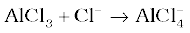
4.26 Is there any change in the hybridisation of B and N atoms as a result of the following reaction ?
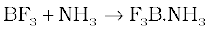
4.27 Draw diagrams showing the formation of a double bond and a triple bond between carbon atoms in C2H4 and C2H2 molecules.
4.28 What is the total number of sigma and pi bonds in the following molecules ?
(a) C2H2 (b) C2H4
4.29 Considering x-axis as the internuclear axis which out of the following will not form a sigma bond and why? (a) 1s and 1s (b) 1s and 2px ; (c) 2py and 2py (d) 1s and 2s.
4.30 Which hybrid orbitals are used by carbon atoms in the following molecules ?
CH3–CH3; (b) CH3–CH=CH2; (c) CH3-CH2-OH; (d) CH3-CHO (e) CH3COOH
4.31 What do you understand by bond pairs and lone pairs of electrons ? Illustrate by giving one exmaple of each type.
4.32 Distinguish between a sigma and a pi bond.
4.33 Explain the formation of H2 molecule on the basis of valence bond theory.
4.34 Write the important conditions required for the linear combination of atomic orbitals to form molecular orbitals.
4.35 Use molecular orbital theory to explain why the Be2 molecule does not exist.
4.36 Compare the relative stability of the following species and indicate their magnetic properties;
(superoxide), (peroxide)
4.37 Write the significance of a plus and a minus sign shown in representing the orbitals.
4.38 Describe the hybridisation in case of PCl5. Why are the axial bonds longer as compared to equatorial bonds ?
4.39 Define hydrogen bond. Is it weaker or stronger than the van der Waals forces?
4.40 What is meant by the term bond order ? Calculate the bond order of : N2, O2, O2+ and O2–.